🎧 Paper Summary — listen to a 5-minute audio overview
We investigate whether quantum kernel methods can outperform classical kernels on binary insurance classification using MIMIC-CXR chest radiographs, where class imbalance causes standard linear classifiers to collapse. We evaluate quantum support vector machines (QSVM) with frozen embeddings from three medical foundation models (MedSigLIP-448, RAD-DINO, ViT-patch32) under noiseless simulation, using a two-tier fair comparison framework.
At Tier 1 (untuned QSVM vs. untuned linear SVM, C=1), QSVM wins minority-class F1 in all 18 configurations (17 at p<0.001, 1 at p<0.01). The classical linear kernel collapses to F1=0 on 90–100% of seeds at every qubit count, while QSVM maintains recall. At q=11, QSVM achieves mean F1=0.343±0.170 versus classical F1=0.050±0.159 (ΔF1=+0.293, p<0.001). At Tier 2 (untuned QSVM vs. C-tuned RBF SVM), QSVM wins all 7 configurations (mean gain +0.068).
Eigenspectrum analysis shows quantum kernel effective rank reaches 69.80 at q=11, far exceeding linear kernel rank of exactly q=11. These results provide evidence of quantum kernel advantage on a real medical imaging task. The identified mechanism — kernel rank collapse in classical methods under class imbalance — gives a concrete basis for predicting where quantum kernels hold an edge.
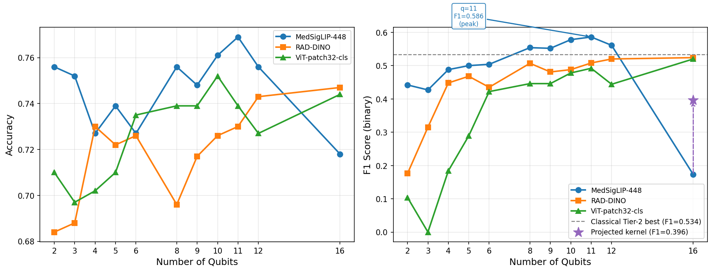
F1 score vs. qubit count across models. QSVM minority-class F1 scales with qubit count across MedSigLIP-448, RAD-DINO, and ViT-patch32 embeddings, while the classical linear SVM remains collapsed near zero.
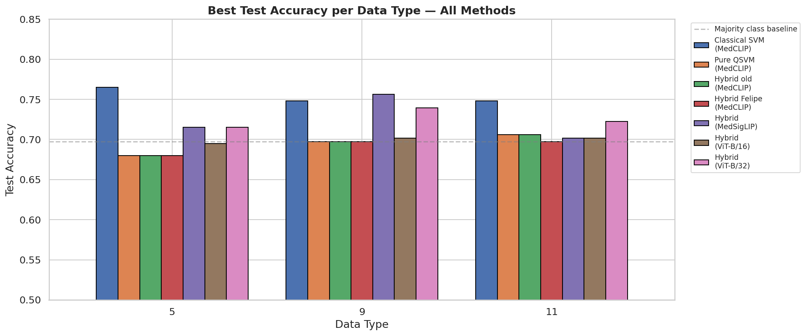
Summary comparison across all 18 Tier-1 configurations. QSVM (green) consistently outperforms the classical linear SVM (gray) on minority-class F1. The classical kernel collapses to F1=0 on 90–100% of seeds at every qubit count.
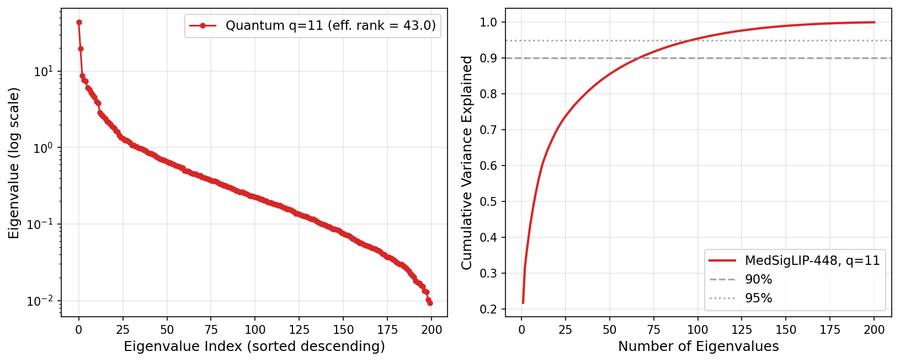
Quantum kernel eigenspectrum at q=11 (MedSigLIP-448). The quantum kernel achieves an effective rank of 69.80, spreading eigenvalue mass across many dimensions. The linear kernel's rank equals exactly q=11 — insufficient to resolve the minority class under severe imbalance.
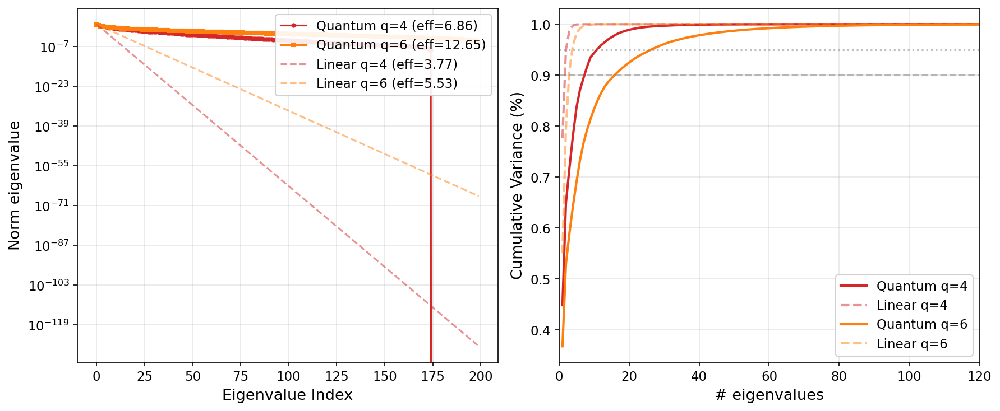
Quantum vs. linear eigenspectrum at q=4 and q=6. Across qubit counts, the quantum kernel maintains a richer eigenspectrum than the linear kernel, which concentrates its rank budget and fails on imbalanced data.
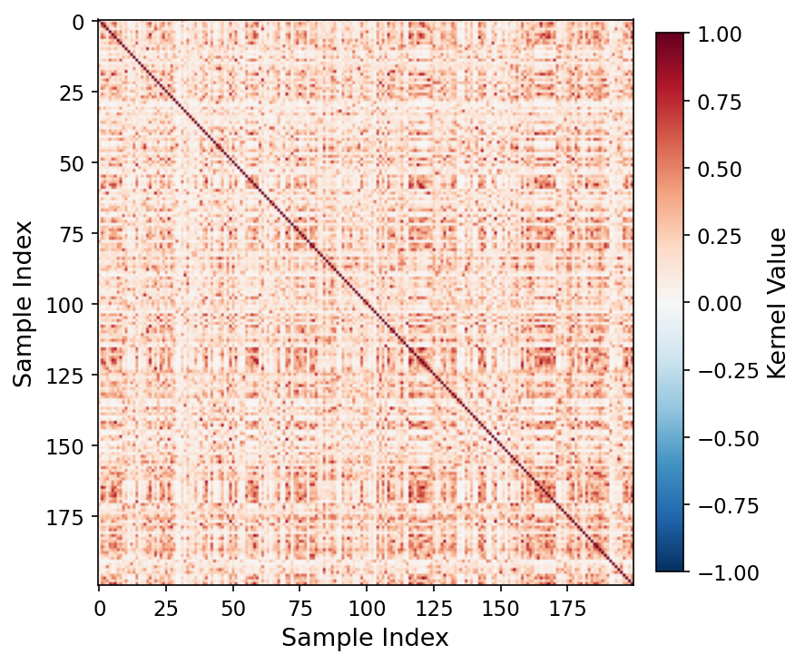
Quantum kernel matrix, q=11 (MedSigLIP-448). Rich off-diagonal block structure reflects class boundaries preserved by the quantum feature map. Effective rank = 43.04 (multi-seed mean 69.80).
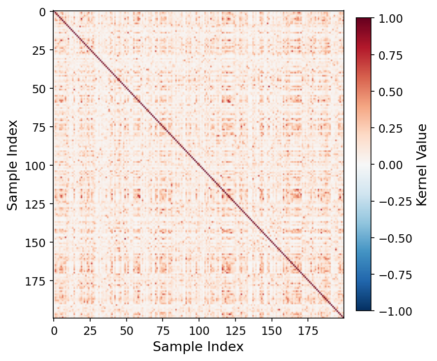
Quantum kernel matrix, q=16 (MedSigLIP-448). At q=16, swap-test fidelity concentration causes off-diagonal entries to converge toward a single value, consistent with the onset of concentration collapse.
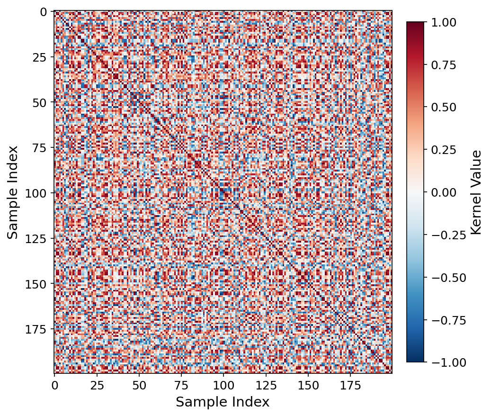
Kernel heatmap, RAD-DINO q=4.
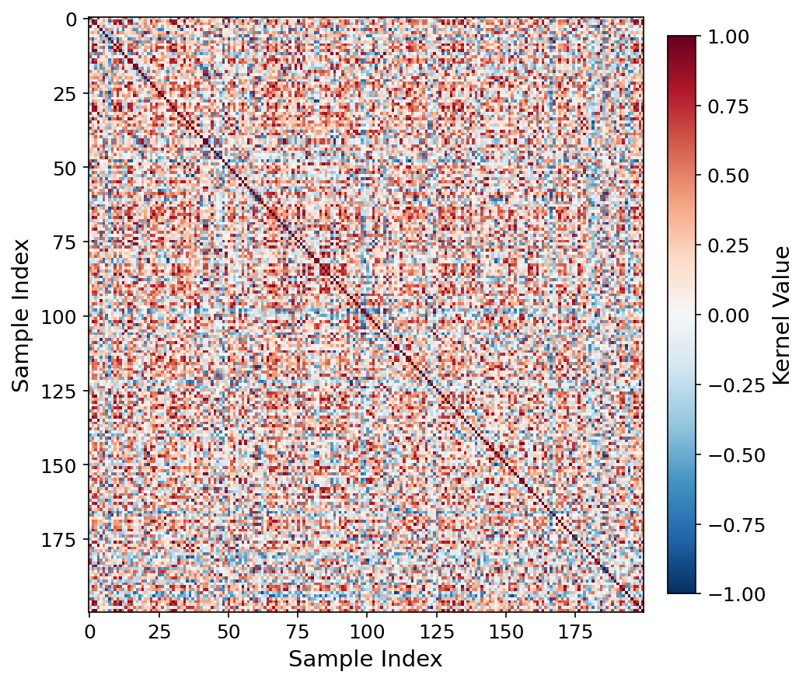
Kernel heatmap, RAD-DINO q=6.
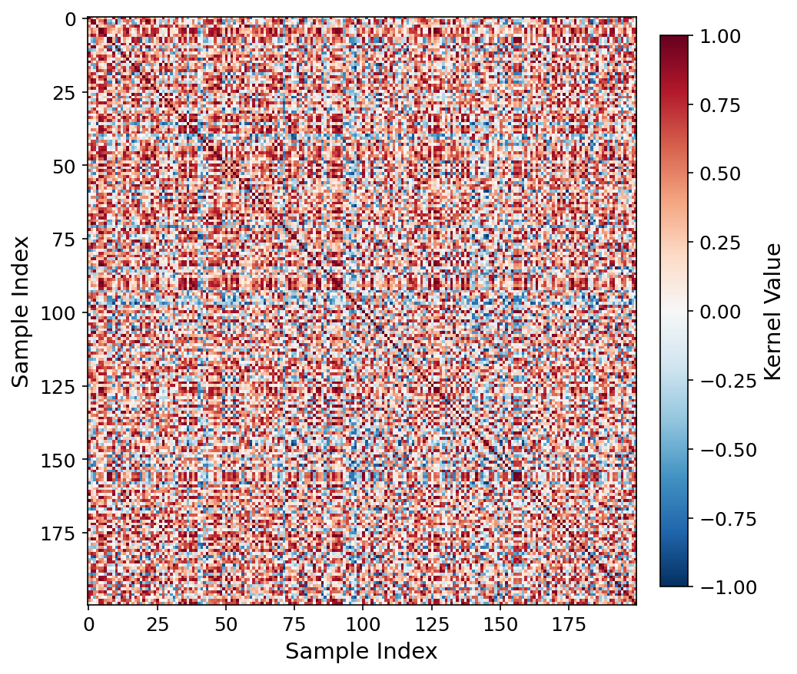
Kernel heatmap, ViT-patch32 q=4.
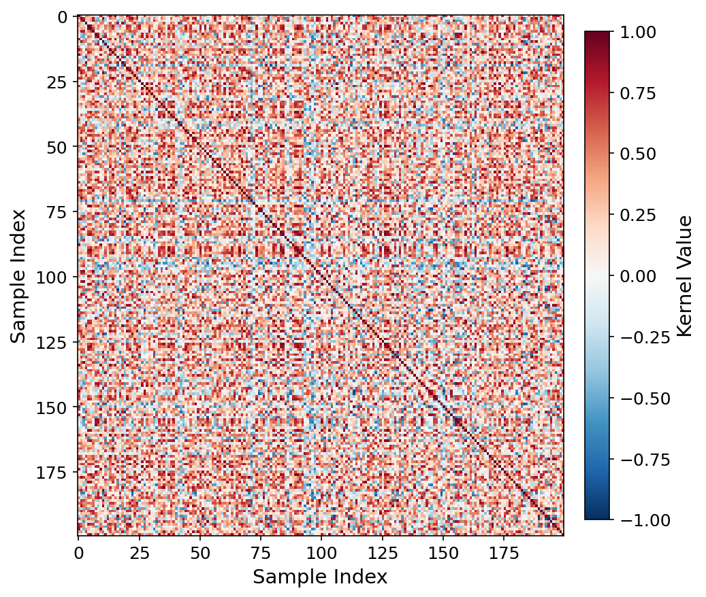
Kernel heatmap, ViT-patch32 q=6.
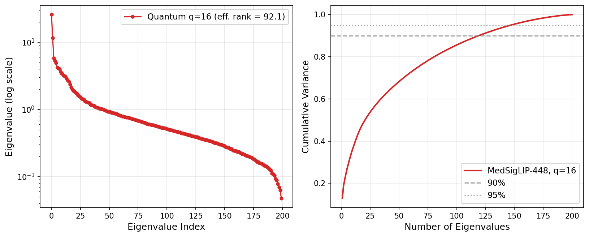
Quantum kernel eigenspectrum at q=16 (MedSigLIP-448). At q=16, effective rank rises to 92.13 yet multi-seed mean F1 remains 0.377 (a Tier-1 win), confirming that concentration collapse at q=16 is seed-dependent rather than universal.
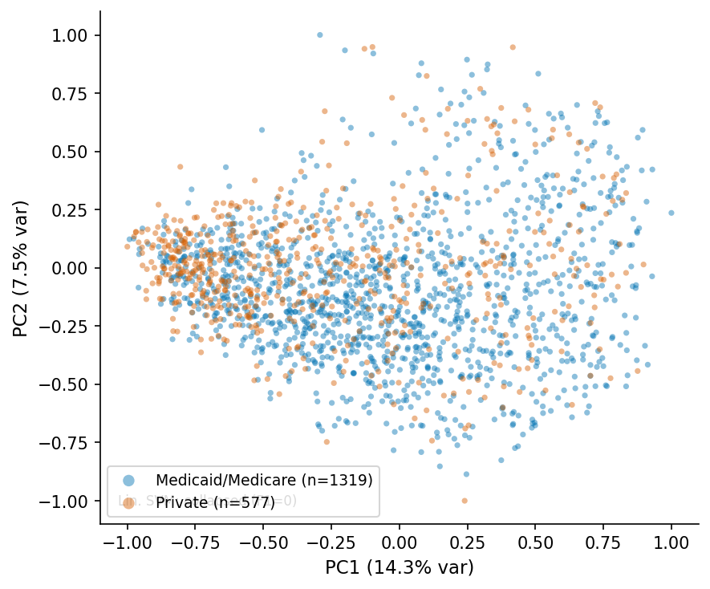
PCA scatter, MedSigLIP-448 q=4.
PCA scatter, RAD-DINO q=4.
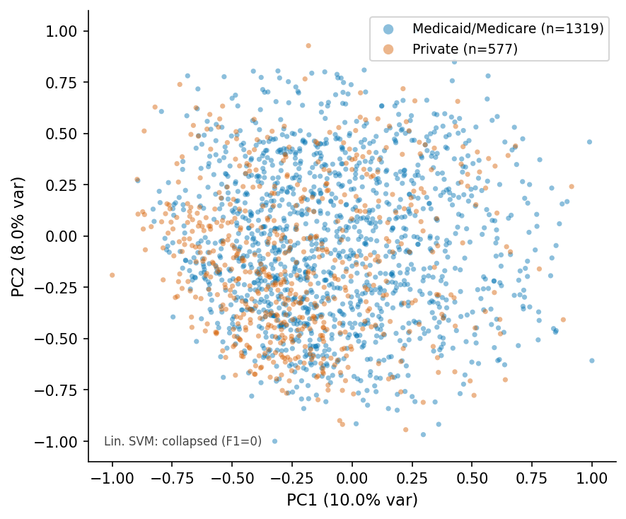
PCA scatter, ViT-patch32 q=4.
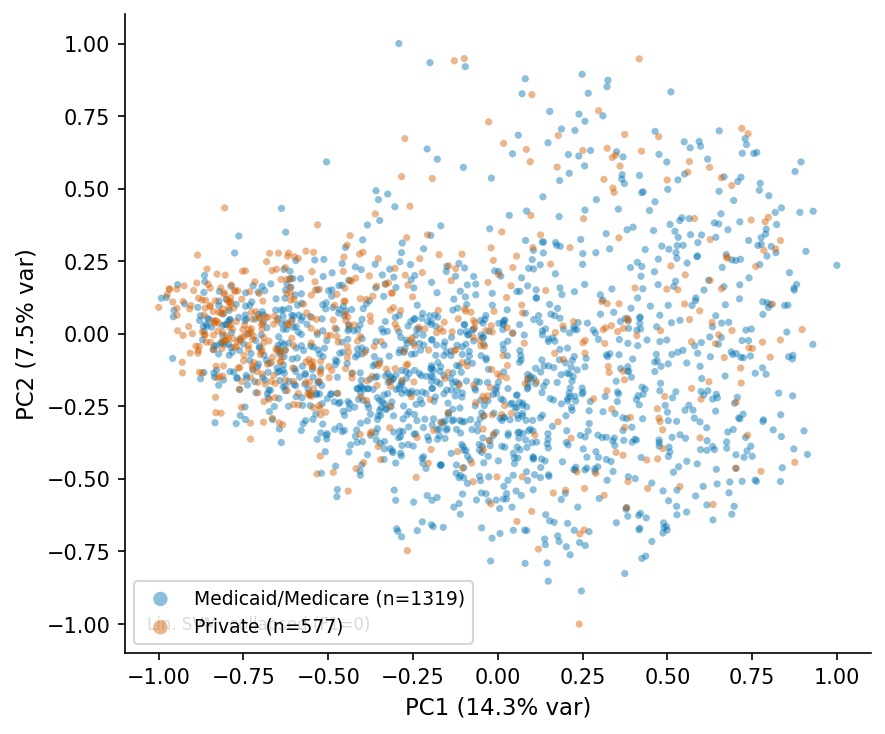
PCA scatter, MedSigLIP-448 q=6.
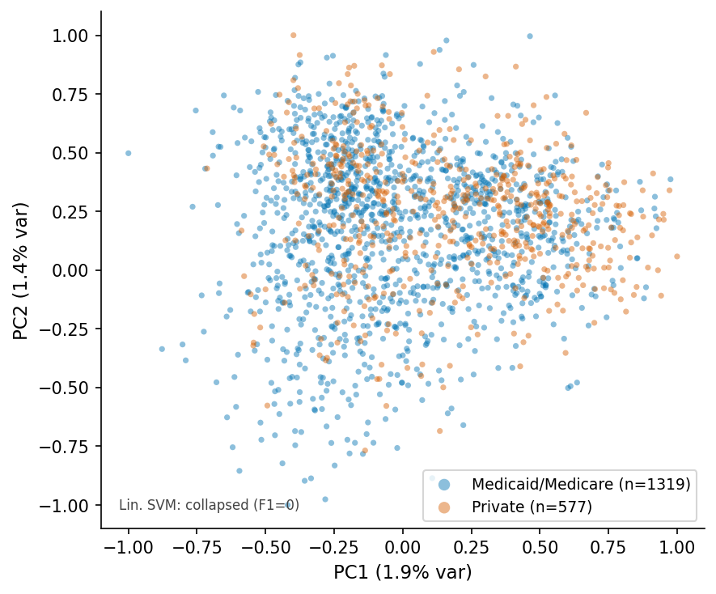
PCA scatter, RAD-DINO q=6.
PCA scatter, ViT-patch32 q=6.
Frozen embeddings from three medical foundation models are extracted from MIMIC-CXR chest radiographs and compressed via PCA to q dimensions, matching the qubit count. A parameterized quantum circuit encodes each compressed embedding as a quantum state; the inner product of pairs of states defines the quantum kernel matrix. A classical SVM then trains on this kernel.
The two-tier comparison framework separates hyperparameter effects from kernel effects. Tier 1 holds the SVM regularization constant (C=1) for both QSVM and linear SVM, isolating the kernel as the only varying factor. Tier 2 allows the classical RBF SVM to tune C via cross-validation, giving it an intentional advantage while keeping QSVM untuned — a conservative test that QSVM still passes in all 7 evaluated cases.
The dataset is a binary insurance classification task drawn from MIMIC-CXR, with severe class imbalance (roughly 9:1). This imbalance is the mechanism that causes classical linear kernels to collapse: their effective rank is bounded by q, the embedding dimension, which is too low to build a separating hyperplane that recovers the minority class.
@article{cajas2026qml,
title = {Quantum Kernel Advantage over Classical Collapse in Medical Foundation Model Embeddings},
author = {Cajas Ord{\'o}{\~n}ez, Sebasti{\'a}n A. and Ocampo Osorio, Felipe and Koh, Dax Enshan and Al Attrach, Rafi and Marzullo, Aldo and Guerra-Adames, Ariel and Andrade, J. Alejandro and Goh, Siong Thye and Chen, Chi-Yu and Gorijavolu, Rahul and Yang, Xue and Hebdon, Noah Dane and Celi, Leo Anthony},
journal = {arXiv preprint arXiv:2604.24597},
year = {2026},
url = {https://arxiv.org/abs/2604.24597}
}